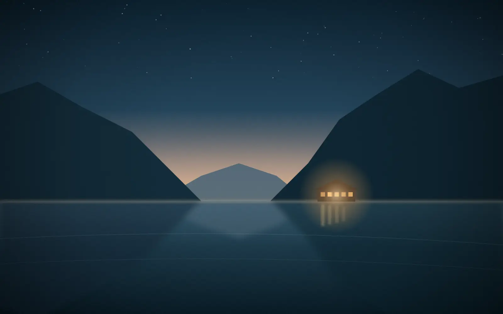
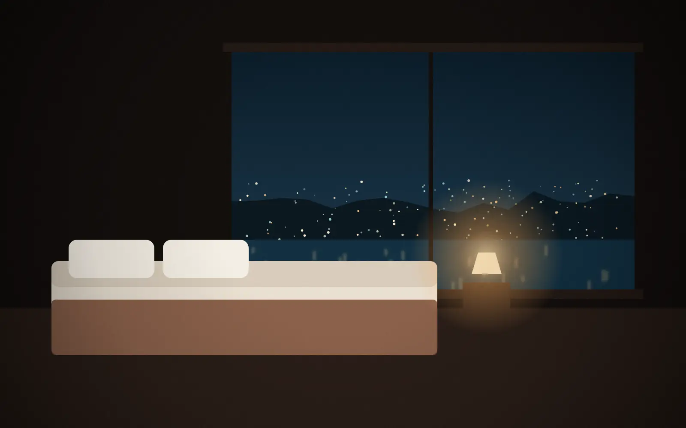
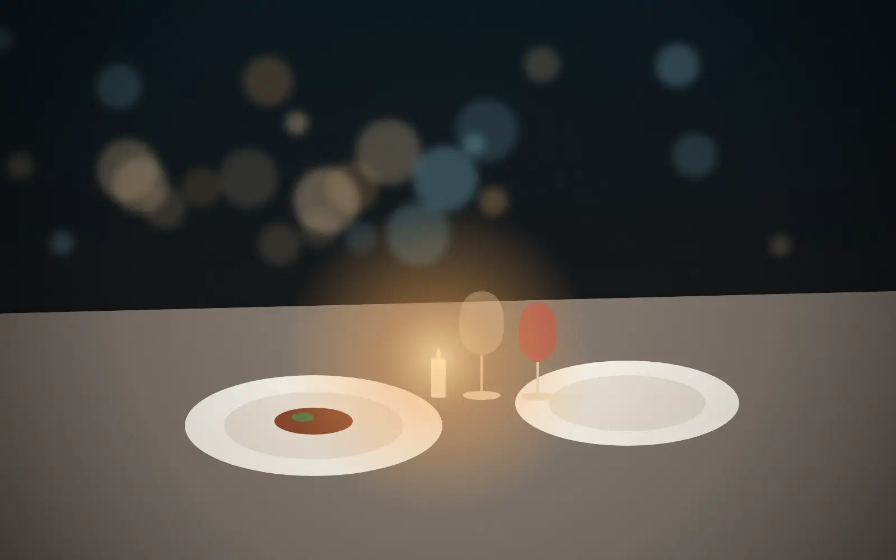
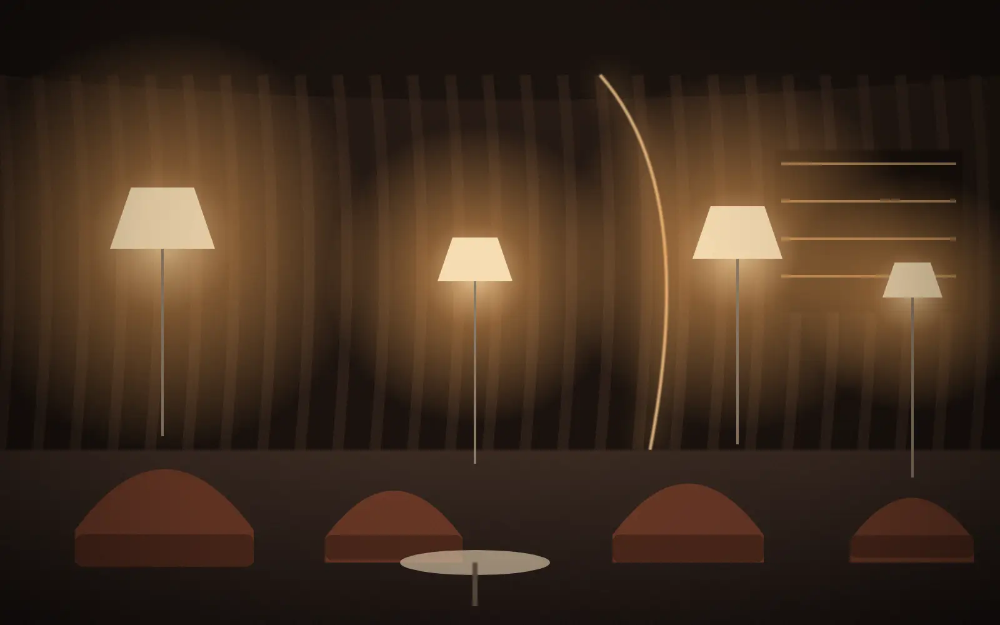
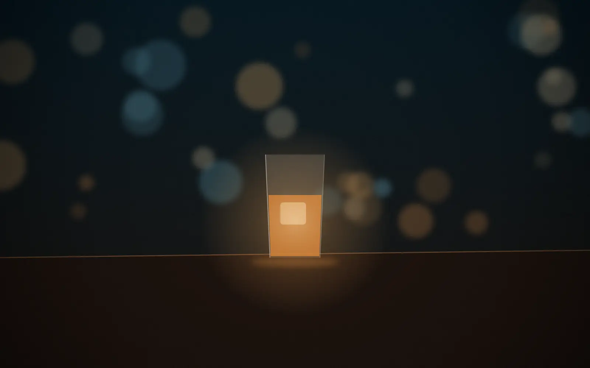
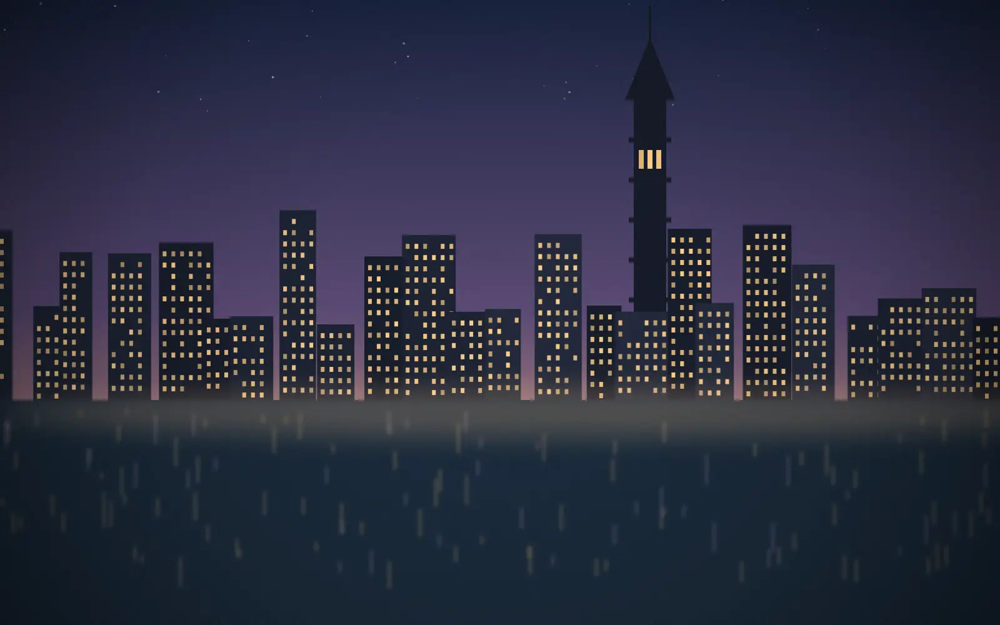

Halvane, private journeys composed after dark
Kestrin Fjord
1 / 4
Every hour, considered
One designer plans the whole journey, from the first call to the car that takes you home. These are the parts guests remember.

Rooms that face the right way
We choose the room before the hotel: the one with the window on the water, the bed away from the lift.

Tables that travel with you
A cook on the boat, a booth held in the old town, a dinner in the dunes when the wind drops.

A salon before you leave
Bags taken at the door, papers checked, a drink and a quiet chair until the car arrives.

The Circle
Travel more, plan less
Members keep one designer, first choice of departures and a chair in every salon.
See the tiersNight notes
All notesLetters from the atelier
New departures and one long read, every second month.
The next letter goes to .
Journeys
Six journeys, each one changed for you
Start from a journey below, or tell us where you want to wake up and we will begin from nothing.
Compose your ownThe Kestrin night fjord
A boat of four suites, two weeks of long dusk, and a lodge at the head of the water.
From USD 7,200 a guest
Lantern hours in Velin
Arrive by sleeper, stay on the quiet canal, and see the old town after the day visitors leave.
From USD 3,900 a guest
Coralune by seaplane
Twenty minutes over the reef, then a house on stilts and nothing to do until the tide turns.
From USD 9,600 a guest
Mirra dunes under stars
Three nights in a desert house, two in a camp set up wherever the sky is clearest.
From USD 5,400 a guest
Tamsel peaks, slowly
A mountain railway up, a lodge of nine rooms, and a guide who reads the weather before you wake.
From USD 6,800 a guest
The Northmere sleeper
Two nights on the train and one by the lake, for when you have a long weekend and want it to feel longer.
From USD 2,900 a guest
No journeys match. Try another length, or ask us to build one.
Sea · 6 nights
The Kestrin night fjord
Six nights between cliffs, on a boat with four suites and a cook who fishes before breakfast.
Compose this journeyAt a glance
Sample dates and prices. Every journey is changed to your dates, your pace and the people you travel with.
| From | To | Nights | Best months | Price |
|---|---|---|---|---|
| Port Arden | Kestrin Fjord | 6 | September to March | From USD 7,200 a guest, sharing |
Days 1 and 2
Arrival by water
A launch meets the evening train and takes you down the fjord to the boat. Dinner is whatever came out of the water that afternoon.
Days 3 and 4
The long dusk
The light lasts until late. The boat moves only in the morning, so afternoons are for the deck, the sauna, or a walk to a waterfall.
Days 5 and 6
The lodge at the end
Two nights ashore in a lodge of six rooms at the head of the water, then the morning train back to Port Arden.
Make it yours
Departures
Fixed dates, a few suites each
For guests who would rather join a date than choose one. Salon evenings are open to anyone with a journey booked.
- 2 suites leftReserve
The Kestrin night fjord
6 nights from Port Arden · boat of four suites
- OpenReply
Maps and wine: the northern fjords
Port Arden salon · 7 pm
- 4 rooms leftReserve
Tamsel peaks, slowly
6 nights from Northmere · lodge of nine rooms
- Waiting listJoin list
Mirra dunes under stars
5 nights from Port Arden · new moon
- OpenReply
A tasting from the boat kitchen
Velin salon · 8 pm
- 1 house leftReserve
Coralune by seaplane
7 nights from Port Arden · three houses
Nothing on the calendar of that kind yet.
Salons
A quiet room before every journey
Three salons, each a few minutes from the station: a chair, a drink, your papers checked while you wait.
Who can use themPort Arden, Harbour Station
Level 2, above the north concourse · 6 am to 11 pm
The room
A long curved wall of oiled oak, lamps instead of ceiling lights, and chairs turned to the harbour rather than to each other.

The view
Windows over the water and the old tower. Sleeper departures are called quietly, in person, fifteen minutes before boarding.
Velin, Canal Station
Ground floor, by the east platforms · 7 am to 10 pm
The bar
Six stools and a short list from the valley: two wines, a cordial, and coffee roasted across the canal.
Northmere, Lake Station
Platform 1 · open for each sleeper departure
On the platform
A small room on the platform itself, warm when the train is late and quiet when it is on time.
The Circle
For guests who travel more than once a year
One designer who knows you, first choice of every departure, and a chair in every salon.
JoinThree tiers
Dusk
For one journey a year
USD 900a year
- Your own journey designer
- Salon access on travel days
- Letters before anyone else
Midnight
For two or three journeys
USD 2,400a year
- Everything in Dusk
- First choice of departures
- Salon access any day, with a guest
- Transfers home included
Zenith
For a year of travel
USD 6,000a year
- Everything in Midnight
- A suite held on every departure
- Changes at any time, without fees
Sample tiers and prices.
Join
Join the Circle
Tell us a little about how you travel. A designer will write within two working days to introduce themselves. Nothing is charged until you say yes.
Welcome,
Your request for is with us. A designer will write to within two working days.
Night notes
Letters from the road
Places, the people who keep them, and what we learned planning the journeys there.
Places · 2 November 2026 · 5 min read
Two weeks of dusk on the Kestrin fjord
In late September the sun sets behind the western cliffs and then seems to change its mind. For two weeks, dusk on the Kestrin fjord lasts most of the evening.
We first went to plan a single night at the lodge. We stayed for five, because every evening the water went from silver to slate to a deep, still blue, and nobody on the boat wanted to go inside.
A boat that hardly moves
The boat has four suites and moves only in the morning. By lunch it is moored somewhere new, and the afternoon belongs to the deck, the small sauna at the stern and a cook who goes out in the tender at four.
The best thing we do on that boat is nothing, for about three hours every evening.
The journey ends with two nights at a lodge of six rooms at the head of the fjord, and a morning train back to Port Arden that leaves late enough for a last walk.
Enquire
Tell us where you want to wake up
A designer replies within one working day with questions, never a brochure. Nothing is booked or charged until you agree a plan.
- +1 555 0136
Every day, 8 am to 10 pm - concierge@halvane.example
Replies within one working day - Harbour Station, Level 2
Port Arden
Thank you,
A designer will write to about guests going from to (, pace). Nothing has been booked.
Already travelling with us
Find my request
Your reference is on every letter from your designer.
Request
We have sent the latest plan to the email on the request. Your designer can also call you today.
Questions
Before you go
Planning
How far ahead should we enquire?
Placeholder: give your real lead times. Three months is a comfortable start for most journeys; departures fill earlier.
Can you change a journey on this site?
Always. The journeys here are where a conversation starts: dates, rooms, pace and length all change.
Do you plan journeys you do not list?
Yes, if we know a place well enough to plan it properly. If we do not, we will say so.
Salons
Who can use the salons?
Guests on a travel day, and Circle members on any day. Placeholder: state your real rules.
Can I bring a guest?
Members of Midnight and Zenith can. Guests travelling with you are always welcome.
Payment
When do we pay?
Placeholder: describe your deposit and balance terms. Nothing is charged before you agree a plan.
What if we have to cancel?
Placeholder: state your cancellation terms and any insurance you recommend.
Legal
Privacy notice
Sample text: replace it with your own notice, reviewed for your market.
What we collect
What you type into our forms: your name, email address, where and when you want to travel, how many guests, and any note.
Why
To answer your enquiry, plan your journey and, if you asked, send our letters. We do not sell your details.
Your rights
You can ask to see, correct or delete your details at any time by writing to privacy@halvane.example.
Legal
Terms of use
Sample text: replace it with your own terms, reviewed for your market.
Prices and dates
Prices on this site are examples for planning. A journey is confirmed only in writing, with its own price and terms.
Pictures
Pictures show the kind of place a journey visits, not a promise of weather or light on a given day.